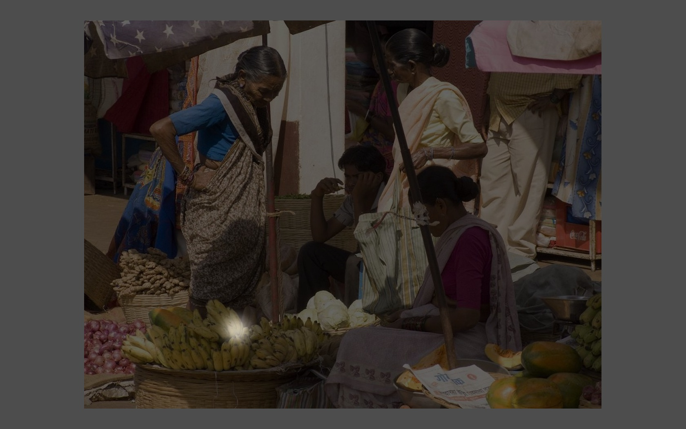

<!DOCTYPE html>
<html>
  <head>
    <script src="jspsych/jspsych.js"></script>
    <script src="jspsych/plugins/jspsych-video-keyboard-response.js"></script>
    <script src="jspsych/plugins/jspsych-video-slider-response.js"></script>
    <script src="jspsych/plugins/jspsych-html-keyboard-response.js"></script>
    <script src="jspsych/plugins/jspsych-html-slider-response.js"></script>
    <script src="jspsych/plugins/jspsych-survey-likert.js"></script>
    <script src="jspsych/plugins/jspsych-instructions.js"></script>
    <script src="jspsych/plugins/jspsych-survey-text.js"></script>
    <script src="jspsych/plugins/jspsych-survey-multi-select.js"></script>
    <script src="jspsych/plugins/jspsych-call-function.js"></script>
    <link rel="stylesheet" href="jspsych/css/jspsych.css">
  </head>
  <body></body>
  <script>


// Initiate timeline

var timeline = [];

// create random subject ID with 8 alphanumeric characters

var rand_subject_id = jsPsych.randomization.randomID(8);

// add the ID to the data for all trials

jsPsych.data.addProperties({ID: rand_subject_id});

// questions for experimenter

var experimenter = {
  type: 'survey-multi-select',
  questions: [
    {
      prompt: '<b>'+"EXPERIMENTER FILL OUT"+'</b>'+'</b>'+'<br/>'+"I have done the following:",
      options: ["Confirmed subject's identity (ID card)",
      "Confirmed normal or corrected-to-normal vision",
      "Obtained consent (signature and date)",
      "Checked the test room lighting",
      "Checked computer screen lighting",
      "Checked distance from screen to chin rest (50cm)",
      "Cleaned and adjusted chin rest",
      "Counterbalanced the order of the tasks",
      "Opened the experiment in Firefox",
      "Made the experiment full screen",
      "Encouraged subject to silence phone, put away distractors, etc."],
      //horizontal: true,
      required: true,
      name: 'Experimenter'
    },
  ],
};

// Set up task instructions

var trial0 = {
    type: 'instructions',
    pages: [
    'Thank you for agreeing to participate in our experiment!'+'</br>'+
    'Feel free to begin whenever you are ready.'
    ],
    show_clickable_nav: true,
    button_label_next: "Begin"
};

var trial1a = {
    type: 'instructions',
    pages: [
    'In this experiment, you will see pictures on the screen.',
    'On top of each picture, you will see hotspots showing where '+'<i>'+'another' +'</i>'+' agent paid attention as they looked at the picture.',
    " For example, here the agent is paying attention to the bananas." +
    '<br>' +
    '</img>',
    //'</img>',
    ],
    show_clickable_nav: true
};

var trial1b = {
    type: 'instructions',
    pages: [
    'And here is the full sequence showing where the agent attended over time'
    ],
    show_clickable_nav: true,
    button_label_next: "View Full Sequence"
}

var trial2 = {
  type: 'video-keyboard-response',
  sources:['EXAMPLE_STIM/example.mp4'],
  choices: "NO_KEYS",
  trial_ends_after_video: true,
  height:500
};

var trial3 = {
    type: 'instructions',
    pages: [
    //Notice that not all of the hotspots are neatly drawn.
    'The hotspots may not always be neatly drawn. There might be some fuzzy or confusing parts.',
    'Just try to get a basic sense of where the agent is attending and how they move their attention over time.',
    "Here's how the experiment will work...",
    '<p>Sometimes, you will see a picture with '+'<span style="color:Black;">'+'<u>'+"Agent A's"+'</u>'+'</span>'+' attention moving across it.'+'</p>'+'<p>'+'Other times, you will see a picture with '+'<span style="color:Black;">'+'<u>'+"Agent B's"+'</u>'+'</span>'+' attention moving across it.</p>',
    'Pay close attention to the ways' +'<span style="color:Black;">'+' Agent A'+'</span>'+' and ' +'<span style="color:Black;">'+'Agent B '+'</span>'+'move their attention.'+'<br/><br>'+'After each set of videos, you will decide which agent was a real person and which was fake.'
    ],
    show_clickable_nav: true,
    button_label_next: "Next"
};

var trial3b = {
  type:'instructions',
  pages: [
      'The experiment is split up into seven chunks (ten trials each), with breaks in between.'+'</br></br>'+'You can begin the first chunk whenever you are ready!'
      ],
  show_clickable_nav:true,
  button_label_next: "Begin"
}

// Push experimenter questions and task instructions to timeline
timeline.push(experimenter)
timeline.push(trial0)
timeline.push(trial1a)
timeline.push(trial1b)
timeline.push(trial2)
timeline.push(trial3)
timeline.push(trial3b)

// Set up break trial instructions

var break1 = {
    type: 'instructions',
    pages: [
    "Great job! You've completed the first chunk of the experiment.",
    "Feel free to take a break and relax.",
    "Whenever you're ready to continue, click 'Next'."
    ],
    show_clickable_nav: true
};

var break2 = {
    type: 'instructions',
    pages: [
    "You've just completed the second chunk. Five more to go!",
    "Feel free to take a break and relax.",
    "Whenever you're ready, you can hit 'Next' to start the next chunk"
    ],
    show_clickable_nav: true
};

var break3 = {
    type: 'instructions',
    pages: [
    "You've just completed the third chunk. Four more to go!",
    "Feel free to take a break and relax.",
    "Whenever you're ready, you can hit 'Next' to start the next chunk"
    ],
    show_clickable_nav: true
};

var break4 = {
    type: 'instructions',
    pages: [
    "You've just completed the fourth chunk. Three more to go!",
    "Feel free to take a break and relax.",
    "Whenever you're ready, you can hit 'Next' to start the next chunk"
    ],
    show_clickable_nav: true
};

var break5 = {
    type: 'instructions',
    pages: [
    "You've just completed the fifth chunk. Two more to go!",
    "Feel free to take a break and relax.",
    "Whenever you're ready, you can hit 'Next' to start the next chunk"
    ],
    show_clickable_nav: true
};

var break6 = {
    type: 'instructions',
    pages: [
    "You've just completed the sixth chunk. One more to go!",
    "Feel free to take a break and relax.",
    "Whenever you're ready, you can hit 'Next' to start the next chunk"
    ],
    show_clickable_nav: true
};

var verify = {
    type: 'instructions',
    pages: [
    "You're about to begin the next chunk.",
    "Remember, for each set of videos, you'll be judging which agent is the real human.",
    "Click 'Next' to begin!"
    ],
    show_clickable_nav: true
}

var breaks=[break1, break2, break3, break4, break5, break6]


// Create video stimuli

//function for getting a random integer in javascript
function getRndInteger(min, max) {
  return Math.floor(Math.random() * (max - min + 1) ) + min;
}

// make an array containing all of the veridical videos
var veridical_videos = [
'STIM_SET_1_2/61537.bmp_pp73_L3_V1.0_veridical_freeview_isoFalse_fps144.mp4',
'STIM_SET_1_2/1591876.bmp_pp63_L1_V1.0_veridical_freeview_isoFalse_fps144.mp4',
'STIM_SET_1_2/1592372.bmp_pp76_L1_V1.0_veridical_freeview_isoFalse_fps144.mp4',
'STIM_SET_1_2/498155.bmp_pp61_L2_V1.0_veridical_freeview_isoFalse_fps144.mp4',
'STIM_SET_1_2/1159440.bmp_pp98_L1_V1.0_veridical_freeview_isoFalse_fps144.mp4',
'STIM_SET_1_2/1592397.bmp_pp85_L3_V1.0_veridical_freeview_isoFalse_fps144.mp4',
'STIM_SET_1_2/498175.bmp_pp154_L1_V1.0_veridical_freeview_isoFalse_fps144.mp4',
'STIM_SET_1_2/1159446.bmp_pp60_L3_V1.0_veridical_freeview_isoFalse_fps144.mp4',
'STIM_SET_1_2/1592499.bmp_pp96_L2_V1.0_veridical_freeview_isoFalse_fps144.mp4',
'STIM_SET_1_2/498253.bmp_pp67_L2_V1.0_veridical_freeview_isoFalse_fps144.mp4',
'STIM_SET_1_2/1159447.bmp_pp70_L2_V1.0_veridical_freeview_isoFalse_fps144.mp4',
'STIM_SET_1_2/1592581.bmp_pp100_L3_V1.0_veridical_freeview_isoFalse_fps144.mp4',
'STIM_SET_1_2/1159515.bmp_pp84_L3_V1.0_veridical_freeview_isoFalse_fps144.mp4',
'STIM_SET_1_2/1592619.bmp_pp56_L3_V1.0_veridical_freeview_isoFalse_fps144.mp4',
'STIM_SET_1_2/712977.bmp_pp51_L1_V1.0_veridical_freeview_isoFalse_fps144.mp4',
'STIM_SET_1_2/1159572.bmp_pp71_L1_V1.0_veridical_freeview_isoFalse_fps144.mp4',
'STIM_SET_1_2/1592657.bmp_pp98_L1_V1.0_veridical_freeview_isoFalse_fps144.mp4',
'STIM_SET_1_2/713017.bmp_pp152_L2_V1.0_veridical_freeview_isoFalse_fps144.mp4',
'STIM_SET_1_2/1159621.bmp_pp92_L3_V1.0_veridical_freeview_isoFalse_fps144.mp4',
'STIM_SET_1_2/1592727.bmp_pp59_L3_V1.0_veridical_freeview_isoFalse_fps144.mp4',
'STIM_SET_1_2/713089.bmp_pp60_L3_V1.0_veridical_freeview_isoFalse_fps144.mp4',
'STIM_SET_1_2/1159675.bmp_pp77_L3_V1.0_veridical_freeview_isoFalse_fps144.mp4',
'STIM_SET_1_2/1592804.bmp_pp91_L3_V1.0_veridical_freeview_isoFalse_fps144.mp4',
'STIM_SET_1_2/713135.bmp_pp54_L2_V1.0_veridical_freeview_isoFalse_fps144.mp4',
'STIM_SET_1_2/1159768.bmp_pp89_L1_V1.0_veridical_freeview_isoFalse_fps144.mp4',
'STIM_SET_1_2/1592807.bmp_pp68_L1_V1.0_veridical_freeview_isoFalse_fps144.mp4',
'STIM_SET_1_2/713211.bmp_pp100_L3_V1.0_veridical_freeview_isoFalse_fps144.mp4',
'STIM_SET_1_2/1159777.bmp_pp77_L3_V1.0_veridical_freeview_isoFalse_fps144.mp4',
'STIM_SET_1_2/1592817.bmp_pp55_L3_V1.0_veridical_freeview_isoFalse_fps144.mp4',
'STIM_SET_1_2/713371.bmp_pp68_L1_V1.0_veridical_freeview_isoFalse_fps144.mp4',
'STIM_SET_1_2/1159784.bmp_pp73_L3_V1.0_veridical_freeview_isoFalse_fps144.mp4',
'STIM_SET_1_2/1592890.bmp_pp82_L2_V1.0_veridical_freeview_isoFalse_fps144.mp4',
'STIM_SET_1_2/713403.bmp_pp80_L3_V1.0_veridical_freeview_isoFalse_fps144.mp4',
'STIM_SET_1_2/1159813.bmp_pp79_L2_V1.0_veridical_freeview_isoFalse_fps144.mp4',
'STIM_SET_1_2/1592934.bmp_pp63_L1_V1.0_veridical_freeview_isoFalse_fps144.mp4',
'STIM_SET_1_2/713513.bmp_pp62_L2_V1.0_veridical_freeview_isoFalse_fps144.mp4',
'STIM_SET_1_2/1159829.bmp_pp91_L3_V1.0_veridical_freeview_isoFalse_fps144.mp4',
'STIM_SET_1_2/1593035.bmp_pp94_L2_V1.0_veridical_freeview_isoFalse_fps144.mp4',
'STIM_SET_1_2/713593.bmp_pp64_L1_V1.0_veridical_freeview_isoFalse_fps144.mp4',
'STIM_SET_1_2/1159855.bmp_pp99_L2_V1.0_veridical_freeview_isoFalse_fps144.mp4',
'STIM_SET_1_2/1593041.bmp_pp58_L1_V1.0_veridical_freeview_isoFalse_fps144.mp4',
'STIM_SET_1_2/713620.bmp_pp65_L3_V1.0_veridical_freeview_isoFalse_fps144.mp4',
'STIM_SET_1_2/1159882.bmp_pp61_L2_V1.0_veridical_freeview_isoFalse_fps144.mp4',
'STIM_SET_1_2/1593146.bmp_pp93_L1_V1.0_veridical_freeview_isoFalse_fps144.mp4',
'STIM_SET_1_2/713666.bmp_pp97_L3_V1.0_veridical_freeview_isoFalse_fps144.mp4',
'STIM_SET_1_2/1160127.bmp_pp90_L2_V1.0_veridical_freeview_isoFalse_fps144.mp4',
'STIM_SET_1_2/285751.bmp_pp55_L3_V1.0_veridical_freeview_isoFalse_fps144.mp4',
'STIM_SET_1_2/713681.bmp_pp86_L2_V1.0_veridical_freeview_isoFalse_fps144.mp4',
'STIM_SET_1_2/1160168.bmp_pp53_L2_V1.0_veridical_freeview_isoFalse_fps144.mp4',
'STIM_SET_1_2/285905.bmp_pp57_L1_V1.0_veridical_freeview_isoFalse_fps144.mp4',
'STIM_SET_1_2/1591994.bmp_pp69_L3_V1.0_veridical_freeview_isoFalse_fps144.mp4',
'STIM_SET_1_2/1591954.bmp_pp62_L2_V1.0_veridical_freeview_isoFalse_fps144.mp4',
'STIM_SET_1_2/285933.bmp_pp81_L1_V1.0_veridical_freeview_isoFalse_fps144.mp4',
'STIM_SET_1_2/713707.bmp_pp154_L1_V1.0_veridical_freeview_isoFalse_fps144.mp4',
'STIM_SET_1_2/1591961.bmp_pp67_L2_V1.0_veridical_freeview_isoFalse_fps144.mp4',
'STIM_SET_1_2/285994.bmp_pp92_L3_V1.0_veridical_freeview_isoFalse_fps144.mp4',
'STIM_SET_1_2/713749.bmp_pp88_L2_V1.0_veridical_freeview_isoFalse_fps144.mp4',
'STIM_SET_1_2/713684.bmp_pp85_L3_V1.0_veridical_freeview_isoFalse_fps144.mp4',
'STIM_SET_1_2/286001.bmp_pp54_L2_V1.0_veridical_freeview_isoFalse_fps144.mp4',
'STIM_SET_1_2/713760.bmp_pp81_L1_V1.0_veridical_freeview_isoFalse_fps144.mp4',
'STIM_SET_1_2/1592133.bmp_pp75_L1_V1.0_veridical_freeview_isoFalse_fps144.mp4',
'STIM_SET_1_2/497950.bmp_pp151_L1_V1.0_veridical_freeview_isoFalse_fps144.mp4',
'STIM_SET_1_2/713779.bmp_pp152_L2_V1.0_veridical_freeview_isoFalse_fps144.mp4',
'STIM_SET_1_2/1592286.bmp_pp52_L1_V1.0_veridical_freeview_isoFalse_fps144.mp4',
'STIM_SET_1_2/498170.bmp_pp153_L3_V1.0_veridical_freeview_isoFalse_fps144.mp4',
'STIM_SET_1_2/713796.bmp_pp84_L3_V1.0_veridical_freeview_isoFalse_fps144.mp4',
'STIM_SET_1_2/1592351.bmp_pp51_L1_V1.0_veridical_freeview_isoFalse_fps144.mp4',
'STIM_SET_1_2/498111.bmp_pp88_L2_V1.0_veridical_freeview_isoFalse_fps144.mp4',
'STIM_SET_1_2/1592362.bmp_pp95_L2_V1.0_veridical_freeview_isoFalse_fps144.mp4',
'STIM_SET_1_2/498149.bmp_pp99_L2_V1.0_veridical_freeview_isoFalse_fps144.mp4'
]

// make a corresponding array containing all of the scrambled videos

var scrambled_videos = [
  'STIM_SET_3/713770.bmp_pp89_L1_V2_veridical_freeview_isoFalsemismatch_61537.bmp_L3_fps90.mp4',
  'STIM_SET_3/1159427.bmp_pp98_L1_V2_veridical_freeview_isoFalsemismatch_1591876.bmp_L1_fps90.mp4',
  'STIM_SET_3/107909.bmp_pp95_L2_V2_veridical_freeview_isoFalsemismatch_1592372.bmp_L1_fps90.mp4',
  'STIM_SET_3/498258.bmp_pp51_L1_V2_veridical_freeview_isoFalsemismatch_498155.bmp_L2_fps90.mp4',
  'STIM_SET_3/713829.bmp_pp60_L3_V2_veridical_freeview_isoFalsemismatch_1159440.bmp_L1_fps90.mp4',
  'STIM_SET_3/713790.bmp_pp100_L3_V2_veridical_freeview_isoFalsemismatch_1592397.bmp_L3_fps90.mp4',
  'STIM_SET_3/713689.bmp_pp153_L3_V2_veridical_freeview_isoFalsemismatch_498175.bmp_L1_fps90.mp4',
  'STIM_SET_3/1592044.bmp_pp94_L2_V2_veridical_freeview_isoFalsemismatch_1159446.bmp_L3_fps90.mp4',
  'STIM_SET_3/1159819.bmp_pp151_L1_V2_veridical_freeview_isoFalsemismatch_1592499.bmp_L2_fps90.mp4',
  'STIM_SET_3/285959.bmp_pp93_L1_V2_veridical_freeview_isoFalsemismatch_498253.bmp_L2_fps90.mp4',
  'STIM_SET_3/1592150.bmp_pp77_L3_V2_veridical_freeview_isoFalsemismatch_1159447.bmp_L2_fps90.mp4',
  'STIM_SET_3/1160189.bmp_pp64_L1_V2_veridical_freeview_isoFalsemismatch_1592581.bmp_L3_fps90.mp4',
  'STIM_SET_3/1159874.bmp_pp96_L2_V2_veridical_freeview_isoFalsemismatch_1159515.bmp_L3_fps90.mp4',
  'STIM_SET_3/150463.bmp_pp55_L3_V2_veridical_freeview_isoFalsemismatch_1592619.bmp_L3_fps90.mp4',
  'STIM_SET_3/1592951.bmp_pp80_L3_V2_veridical_freeview_isoFalsemismatch_712977.bmp_L1_fps90.mp4',
  'STIM_SET_3/713381.bmp_pp82_L2_V2_veridical_freeview_isoFalsemismatch_1159572.bmp_L1_fps90.mp4',
  'STIM_SET_3/498261.bmp_pp84_L3_V2_veridical_freeview_isoFalsemismatch_1592657.bmp_L1_fps90.mp4',
  'STIM_SET_3/1591975.bmp_pp88_L2_V2_veridical_freeview_isoFalsemismatch_713017.bmp_L2_fps90.mp4',
  'STIM_SET_3/1159860.bmp_pp152_L2_V2_veridical_freeview_isoFalsemismatch_1159621.bmp_L3_fps90.mp4',
  'STIM_SET_3/1592038.bmp_pp79_L2_V2_veridical_freeview_isoFalsemismatch_1592727.bmp_L3_fps90.mp4',
  'STIM_SET_3/1592201.bmp_pp97_L3_V2_veridical_freeview_isoFalsemismatch_713089.bmp_L3_fps90.mp4',
  'STIM_SET_3/1159508.bmp_pp151_L1_V2_veridical_freeview_isoFalsemismatch_1159675.bmp_L3_fps90.mp4',
  'STIM_SET_3/1591920.bmp_pp97_L3_V2_veridical_freeview_isoFalsemismatch_1592804.bmp_L3_fps90.mp4',
  'STIM_SET_3/1592567.bmp_pp70_L2_V2_veridical_freeview_isoFalsemismatch_713135.bmp_L2_fps90.mp4',
  'STIM_SET_3/713788.bmp_pp52_L1_V2_veridical_freeview_isoFalsemismatch_1159768.bmp_L1_fps90.mp4',
  'STIM_SET_3/713652.bmp_pp89_L1_V2_veridical_freeview_isoFalsemismatch_1592807.bmp_L1_fps90.mp4',
  'STIM_SET_3/1592921.bmp_pp69_L3_V2_veridical_freeview_isoFalsemismatch_713211.bmp_L3_fps90.mp4',
  'STIM_SET_3/1592017.bmp_pp154_L1_V2_veridical_freeview_isoFalsemismatch_1159777.bmp_L3_fps90.mp4',
  'STIM_SET_3/1159329.bmp_pp61_L2_V2_veridical_freeview_isoFalsemismatch_1592817.bmp_L3_fps90.mp4',
  'STIM_SET_3/498396.bmp_pp99_L2_V2_veridical_freeview_isoFalsemismatch_713371.bmp_L1_fps90.mp4',
  'STIM_SET_3/61513.bmp_pp75_L1_V2_veridical_freeview_isoFalsemismatch_1159784.bmp_L3_fps90.mp4',
  'STIM_SET_3/1592168.bmp_pp71_L1_V2_veridical_freeview_isoFalsemismatch_1592890.bmp_L2_fps90.mp4',
  'STIM_SET_3/286034.bmp_pp69_L3_V2_veridical_freeview_isoFalsemismatch_713403.bmp_L3_fps90.mp4',
  'STIM_SET_3/1592129.bmp_pp153_L3_V2_veridical_freeview_isoFalsemismatch_1159813.bmp_L2_fps90.mp4',
  'STIM_SET_3/1159392.bmp_pp96_L2_V2_veridical_freeview_isoFalsemismatch_1592934.bmp_L1_fps90.mp4',
  'STIM_SET_3/1592047.bmp_pp51_L1_V2_veridical_freeview_isoFalsemismatch_713513.bmp_L2_fps90.mp4',
  'STIM_SET_3/1159956.bmp_pp59_L3_V2_veridical_freeview_isoFalsemismatch_1159829.bmp_L3_fps90.mp4',
  'STIM_SET_3/1159325.bmp_pp67_L2_V2_veridical_freeview_isoFalsemismatch_1593035.bmp_L2_fps90.mp4',
  'STIM_SET_3/1592747.bmp_pp53_L2_V2_veridical_freeview_isoFalsemismatch_713593.bmp_L1_fps90.mp4',
  'STIM_SET_3/285932.bmp_pp64_L1_V2_veridical_freeview_isoFalsemismatch_1159855.bmp_L2_fps90.mp4',
  'STIM_SET_3/1591781.bmp_pp63_L1_V2_veridical_freeview_isoFalsemismatch_1593041.bmp_L1_fps90.mp4',
  'STIM_SET_3/498398.bmp_pp81_L1_V2_veridical_freeview_isoFalsemismatch_713620.bmp_L3_fps90.mp4',
  'STIM_SET_3/285715.bmp_pp67_L2_V2_veridical_freeview_isoFalsemismatch_1159882.bmp_L2_fps90.mp4',
  'STIM_SET_3/1592298.bmp_pp56_L3_V2_veridical_freeview_isoFalsemismatch_1593146.bmp_L1_fps90.mp4',
  'STIM_SET_3/1592289.bmp_pp92_L3_V2_veridical_freeview_isoFalsemismatch_713666.bmp_L3_fps90.mp4',
  'STIM_SET_3/498372.bmp_pp95_L2_V2_veridical_freeview_isoFalsemismatch_1160127.bmp_L2_fps90.mp4',
  'STIM_SET_3/285946.bmp_pp79_L2_V2_veridical_freeview_isoFalsemismatch_285751.bmp_L3_fps90.mp4',
  'STIM_SET_3/498025.bmp_pp81_L1_V2_veridical_freeview_isoFalsemismatch_713681.bmp_L2_fps90.mp4',
  'STIM_SET_3/1592857.bmp_pp52_L1_V2_veridical_freeview_isoFalsemismatch_1160168.bmp_L2_fps90.mp4',
  'STIM_SET_3/1592568.bmp_pp71_L1_V2_veridical_freeview_isoFalsemismatch_285905.bmp_L1_fps90.mp4',
  'STIM_SET_3/713328.bmp_pp86_L2_V2_veridical_freeview_isoFalsemismatch_1591994.bmp_L3_fps90.mp4',
  'STIM_SET_3/1160049.bmp_pp53_L2_V2_veridical_freeview_isoFalsemismatch_1591954.bmp_L2_fps90.mp4',
  'STIM_SET_3/1159973.bmp_pp98_L1_V2_veridical_freeview_isoFalsemismatch_285933.bmp_L1_fps90.mp4',
  'STIM_SET_3/1592314.bmp_pp100_L3_V2_veridical_freeview_isoFalsemismatch_713707.bmp_L1_fps90.mp4',
  'STIM_SET_3/1592530.bmp_pp75_L1_V2_veridical_freeview_isoFalsemismatch_1591961.bmp_L2_fps90.mp4',
  'STIM_SET_3/1159592.bmp_pp91_L3_V2_veridical_freeview_isoFalsemismatch_285994.bmp_L3_fps90.mp4',
  'STIM_SET_3/713858.bmp_pp57_L1_V2_veridical_freeview_isoFalsemismatch_713749.bmp_L2_fps90.mp4',
  'STIM_SET_3/713920.bmp_pp76_L1_V2_veridical_freeview_isoFalsemismatch_713684.bmp_L3_fps90.mp4',
  'STIM_SET_3/1160204.bmp_pp54_L2_V2_veridical_freeview_isoFalsemismatch_286001.bmp_L2_fps90.mp4',
  'STIM_SET_3/285684.bmp_pp80_L3_V2_veridical_freeview_isoFalsemismatch_713760.bmp_L1_fps90.mp4',
  'STIM_SET_3/1160247.bmp_pp54_L2_V2_veridical_freeview_isoFalsemismatch_1592133.bmp_L1_fps90.mp4',
  'STIM_SET_3/713274.bmp_pp73_L3_V2_veridical_freeview_isoFalsemismatch_497950.bmp_L1_fps90.mp4',
  'STIM_SET_3/1592305.bmp_pp65_L3_V2_veridical_freeview_isoFalsemismatch_713779.bmp_L2_fps90.mp4',
  'STIM_SET_3/498326.bmp_pp57_L1_V2_veridical_freeview_isoFalsemismatch_1592286.bmp_L1_fps90.mp4',
  'STIM_SET_3/713742.bmp_pp91_L3_V2_veridical_freeview_isoFalsemismatch_498170.bmp_L3_fps90.mp4',
  'STIM_SET_3/713633.bmp_pp58_L1_V2_veridical_freeview_isoFalsemismatch_713796.bmp_L3_fps90.mp4',
  'STIM_SET_3/1592025.bmp_pp68_L1_V2_veridical_freeview_isoFalsemismatch_1592351.bmp_L1_fps90.mp4',
  'STIM_SET_3/1592350.bmp_pp55_L3_V2_veridical_freeview_isoFalsemismatch_498111.bmp_L2_fps90.mp4',
  'STIM_SET_3/150277.bmp_pp65_L3_V2_veridical_freeview_isoFalsemismatch_1592362.bmp_L2_fps90.mp4',
  'STIM_SET_3/107955.bmp_pp90_L2_V2_veridical_freeview_isoFalsemismatch_498149.bmp_L2_fps90.mp4']


// array of both possible prompts, viewers A and B
var viewer_list = ['<span style="color:Black; font-size:50px;">'+'Agent A','<span style="color:Black; font-size:50px;">'+'Agent B']


// loop through the total number of trials you want in the experiment

var num_trials = veridical_videos.length

// var num_trials = 5

// start block tracker to track what block we're in
var block = 0

// trial type to hide cursor while videos display
var cursor_off = {
    type: 'call-function',
    func: function() {
        document.body.style.cursor= "none";
    }
}

// trial type to turn cursor back on after videos display
var cursor_on = {
    type: 'call-function',
    func: function() {
        document.body.style.cursor= "auto";
    }
}

// (in our case, this is the same as the total number of videos)
for(i=0; i<num_trials; i++){

  index = getRndInteger(0,veridical_videos.length-1)

  // make stim_list
  stim_list   = [veridical_videos[index],scrambled_videos[index]]

  // make condition_list
  cond_list   = ['veridical','scrambled']

  // get rid of these from the full array (no repeats)
  veridical_videos.splice(index,1); scrambled_videos.splice(index,1)

  // select at random which item to show first
  first_stim    = getRndInteger(0,1)
  second_stim   = Math.abs(first_stim-1)

  // based on first_stim, determine which judgement is correct
  if (first_stim==0){
    corr = 0
  } else {
    corr = 1
  }

  // Make confidence judgement trial
  var confidence = {
      type: 'survey-likert',
      questions: [
        {
          prompt: "How confident are you in your answer?",
          name: "confidence",
          labels: [
            "1"+'<br/>'+"Very"+ '<br/>'+"unsure",
            "2"+'<br/>'+"A little "+'<br/>'+ "unsure",
            "3"+'<br/>'+"A little confident",
            "4"+'<br/>'+"Very confident"
          ],required: true
          }
        ],
      };

  var viewer1 = {
      type: 'html-keyboard-response',
      stimulus: [viewer_list[0]],
      stimulus_duration: 1500,
      trial_duration: 1500,
  };

  var video1 = {
      type: 'video-keyboard-response',
      sources: [stim_list[first_stim]],
      prompt: [viewer_list[0]],
      choices: "NO_KEYS",
      trial_ends_after_video: true,
      height:500,
      condition: [cond_list[first_stim]],
      data: {
        agent:     'Agent A',
        condition: cond_list[first_stim],
        image:     stim_list[first_stim]
      }
  };

  var viewer2 = {
      type: 'html-keyboard-response',
      stimulus: [viewer_list[1]],
      stimulus_duration: 1500,
      trial_duration: 1500,
      //choices: "NO_KEYS"
  };

  var video2 = {
      type: 'video-keyboard-response',
      sources: [stim_list[second_stim]],
      prompt: [viewer_list[1]],
      choices: "NO_KEYS",
      trial_ends_after_video: true,
      height:500,
      condition:[cond_list[second_stim]],
      data: {
        agent:     'Agent B',
        condition: cond_list[second_stim],
        image:     stim_list[second_stim]
      }
  };

  var judge = {
    type: 'survey-likert',
    questions:
    [
    {prompt: "Which one was the real human?", name:"judgement", labels: ['<span style="color:Black; font-size:20px;">'+'Agent A'+'</span>', '<span style="color:Black; font-size:20px;">'+'Agent B'+'</span>'],required: true}
    ],

    data: {
    correct_answer: corr
    }};

  timeline.push(cursor_off)
  timeline.push(viewer1)
  timeline.push(video1)
  timeline.push(viewer2)
  timeline.push(video2)
  timeline.push(cursor_on)
  timeline.push(judge)
  timeline.push(confidence)

  // if length(i)/16 has no remainder
  if (((i+1)%10==0)&&(i!=69)){
    timeline.push(breaks[block])
    timeline.push(verify)
    block+=1
  }
  }

// Create ending trials

var closing0 = {
    type: 'instructions',
    pages: [
    "Awesome job! You have finished the last chunk." +'</br></br>'+'We just have a few final questions for you.'
    ],
    show_clickable_nav: true
};

var closing00 = {
    type: 'instructions',
    pages: [
    "Please fill out the following ten multiple choice questions and three free response questions to the best of your ability."
    ],
    show_clickable_nav: true
};

var closing01a = {
      type: 'survey-likert',
      questions: [
        {
          prompt:'<b>'+"For the videos that I judged to be "+'<span style="color: red">'+"more human:"+'</span>'+'</b>'+'<br/>'+"When I saw the attention hotspots, I felt that another conscious agent was looking at the image.",
          name: "post-1",
          labels: [
            "1"+'<br/>'+"Never /"+'<br/>'+"Almost never",
            "2"+'<br/>'+"Sometimes",
            "3"+'<br/>'+"Often",
            "4"+'<br/>'+"Always /"+'<br/>'+"Almost always"
          ],required: true
          }
        ],
      }

var closing01b = {
      type: 'survey-likert',
      questions: [
        {
          prompt: '<b>'+"For the videos that I judged to be "+'<span style="color: red">'+"more fake:"+'</span>'+'</b>'+'<br/>'+"When I saw the attention hotspots, I felt that another conscious agent was looking at the image.",
          name: "post-1",
          labels: [
            "1"+'<br/>'+"Never /"+'<br/>'+"Almost never",
            "2"+'<br/>'+"Sometimes",
            "3"+'<br/>'+"Often",
            "4"+'<br/>'+"Always /"+'<br/>'+"Almost always"
          ],required: true
          }
        ],
      }

var closing02a = {
      type: 'survey-likert',
      questions: [
        {
          prompt: '<b>'+"For the videos that I judged to be "+'<span style="color: red">'+"more human:"+'</span>'+'</b>'+'<br/>'+"When I saw the attention hotspots, I couldn't help but feel there was another conscious agent looking at the image - it was automatic. ",
          name: "post-2",
          labels: [
            "1"+'<br/>'+"Never /"+'<br/>'+"Almost never",
            "2"+'<br/>'+"Sometimes",
            "3"+'<br/>'+"Often",
            "4"+'<br/>'+"Always /"+'<br/>'+"Almost always"
          ],required: true
          }
        ],
      }

var closing02b = {
      type: 'survey-likert',
      questions: [
        {
          prompt: '<b>'+"For the videos that I judged to be "+'<span style="color: red">'+"more fake:"+'</span>'+'</b>'+'<br/>'+"When I saw the attention hotspots, I couldn't help but feel there was another conscious agent looking at the image - it was automatic. ",
          name: "post-2",
          labels: [
            "1"+'<br/>'+"Never /"+'<br/>'+"Almost never",
            "2"+'<br/>'+"Sometimes",
            "3"+'<br/>'+"Often",
            "4"+'<br/>'+"Always /"+'<br/>'+"Almost always"
          ],required: true
          }
        ],
      }

var closing03a = {
      type: 'survey-likert',
      questions: [
        {
          prompt: '<b>'+"For the videos that I judged to be "+'<span style="color: red">'+"more human:"+'</span>'+'</b>'+'<br/>'+"It felt like the other agent was moving its attention in the same ways that I would.",
          name: "post-3",
          labels: [
            "1"+'<br/>'+"Never /"+'<br/>'+"Almost never",
            "2"+'<br/>'+"Sometimes",
            "3"+'<br/>'+"Often",
            "4"+'<br/>'+"Always /"+'<br/>'+"Almost always"
          ],required: true
          }
        ],
      }

var closing03b = {
      type: 'survey-likert',
      questions: [
        {
          prompt: '<b>'+"For the videos that I judged to be "+'<span style="color: red">'+"more fake:"+'</span>'+'</b>'+'<br/>'+"It felt like the other agent was moving its attention in the same ways that I would.",
          name: "post-3",
          labels: [
            "1"+'<br/>'+"Never /"+'<br/>'+"Almost never",
            "2"+'<br/>'+"Sometimes",
            "3"+'<br/>'+"Often",
            "4"+'<br/>'+"Always /"+'<br/>'+"Almost always"
          ],required: true
          }
        ],
      }

var closing04a = {
      type: 'survey-likert',
      questions: [
        {
          prompt: '<b>'+"For the videos that I judged to be "+'<span style="color: red">'+"more human:"+'</span>'+'</b>'+'<br/>'+"It felt as if the attention on the screen was actually my own, not another agent's.",
          name: "post-4",
          labels: [
            "1"+'<br/>'+"Never /"+'<br/>'+"Almost never",
            "2"+'<br/>'+"Sometimes",
            "3"+'<br/>'+"Often",
            "4"+'<br/>'+"Always /"+'<br/>'+"Almost always"
          ],required: true
          }
        ],
      }

var closing04b = {
        type: 'survey-likert',
        questions: [
        {
          prompt: '<b>'+"For the videos that I judged to be "+'<span style="color: red">'+"more fake:"+'</span>'+'</b>'+'<br/>'+"It felt as if the attention on the screen was actually my own, not another agent's.",
          name: "post-4",
          labels: [
            "1"+'<br/>'+"Never /"+'<br/>'+"Almost never",
            "2"+'<br/>'+"Sometimes",
            "3"+'<br/>'+"Often",
            "4"+'<br/>'+"Always /"+'<br/>'+"Almost always"
          ],required: true
          }
        ],
        }

var closing05a = {
      type: 'survey-likert',
      questions: [
        {
          prompt: '<b>'+"For the videos that I judged to be "+'<span style="color: red">'+"more human:"+'</span>'+'</b>'+'<br/>'+"The attention felt robotic or mechanical.",
          name: "post-5",
          labels: [
            "1"+'<br/>'+"Never /"+'<br/>'+"Almost never",
            "2"+'<br/>'+"Sometimes",
            "3"+'<br/>'+"Often",
            "4"+'<br/>'+"Always /"+'<br/>'+"Almost always"
          ],required: true
          }
        ],
      }

var closing05b = {
      type: 'survey-likert',
      questions: [
        {
          prompt: '<b>'+"For the videos that I judged to be "+'<span style="color: red">'+"more fake:"+'</span>'+'</b>'+'<br/>'+"The attention felt robotic or mechanical.",
          name: "post-5",
          labels: [
            "1"+'<br/>'+"Never /"+'<br/>'+"Almost never",
            "2"+'<br/>'+"Sometimes",
            "3"+'<br/>'+"Often",
            "4"+'<br/>'+"Always /"+'<br/>'+"Almost always"
          ],required: true
          }
        ],
      }

var closing1 = {
  type: 'survey-text',
  questions: [
    {prompt: 'Please briefly describe your experience - specifically, tell us anything you think it would be important for us to know!', rows: 5}
  ]
}

var closing2 = {
  type: 'survey-text',
  questions: [
    {prompt: 'What did you find easiest about the experiment? Did you use any particular strategies?', rows: 5}
  ]
}


var closing3 = {
  type: 'survey-text',
  questions: [
    {prompt: 'What did you find most difficult about the experiment?', rows: 5}
  ]
}

var closing4 = {
    type: 'instructions',
    pages: [
    "That's it, you're all done!"+'</br>'+"Thank you for your participation!"
    ],
    trial_duration: 30,
    show_clickable_nav: true,
    button_label_next: "End Experiment"
};

var experimenter_end = {
  type: 'survey-multi-select',
  questions: [
    {
      prompt: '<b>'+"EXPERIMENTER FILL OUT"+'</b>'+'</b>'+'<br/>'+"I have done the following:",
      options: [
      "Printed ID# "+rand_subject_id+" on consent form",
      "Given subject SONA credit or payment",
      "Given the subject debrief form", ],
      required: true,
      name: 'Experimenter_end'
    },
  ],
};

timeline.push(closing0)
timeline.push(closing00)

timeline.push(closing01a)
timeline.push(closing01b)
timeline.push(closing02a)
timeline.push(closing02b)
timeline.push(closing03a)
timeline.push(closing03b)
timeline.push(closing04a)
timeline.push(closing04b)
timeline.push(closing05a)
timeline.push(closing05b)

timeline.push(closing1)
timeline.push(closing2)
timeline.push(closing3)
timeline.push(closing4)
timeline.push(experimenter_end)

// Run the experiment

jsPsych.init({
  timeline: timeline,
  override_safe_mode: false,
  on_finish: function(){
    jsPsych.data.displayData('json')
    jsPsych.data.get().localSave('csv',rand_subject_id+'_BLOBBY_MISMATCH.csv');
    jsPsych.data.get().localSave('json',rand_subject_id+'_BLOBBY_MISMATCH.json');
  }
  })
</script>
</html>
